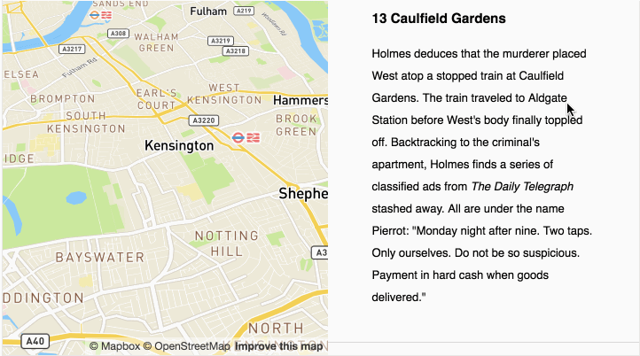
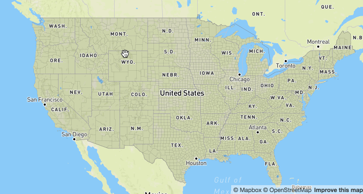

If you see this page, click
Home in the top right.
As I mentioned in the beginning, Mapbox Studio is a modern design platform for managing your spatial data and
creating custom map styles.
First we'll create a new style, add some data, and make some edits to it. Then we'll explore the rest of the platform.
On the
Home page, look for the
Styles panel and click
New style.


You will be prompted to select a
template to start with. Click
Basic, then click
Create.

Welcome to the Mapbox Studio style editor!
In the bottom right corner, you should see a blue monster that's trying to say hello!

If you don't see that, click Help in the top right of the page and click where it says Intro under Tips.


The
first thing it shows us is the
layers pane. Each
layer type has different
styling options.

For any selected
layer you can both edit its
style and change the
data it's styling.
 Click
Click anywhere on the map to see which
layers are at that location.
 Search
Search applies to both
geographic locations and
style layers.
I want to mention a few other things before we get started.
Layers are drawn on the map from the bottom up. The ones at the top of the list are going to be on top of the others in the map.
You can create multiple layers from the same data.
The
template maps (like the
Basic map we're staring with here) use
Mapbox Streets vector tiles. This dataset does
not have
all data at
all zoom levels.

There's a
lot of
really cool stuff you can do with
Mapbox Studio. Let's
dive right in! In the
Layers panel, Click on the
water layer.
Click the Color field and change the water to a nice light purple.

Ooh, pretty!

Now click the
slider next to the
Color field and click
Enable styling by zoom level.
This is where it starts to get fun!
This panel creates a smooth transition between colors as you zoom.
Pick a dark color to fade to and adjust the zoom levels slightly (from 5 to 10, say).

Click on water in the layer panel to close the panel, then zoom in on the Great Lakes.
Cool, right?
We can also do this with text. Open the place_label_city layer and click the Size field to see how it's currently set.
Edit this field so instead of 16px at zoom level 8, the ramp goes to 30px at zoom level 12.

Beautiful! This map is really coming along.
Let's save and poke around the rest of Mapbox Studio for a moment. In the top of the Layers panel, click the purple button that says Publish. Click Publish again at the prompt.
Click Okay, then click the Home button in the left sidebar. Your new style should be there!

Click on the
title of your map to see its
style information page.
This page shows the data that's being used in the map style as well as the layers that style that data. bridge is a good example of a single set of data that has multiple layers.
In the right sidebar, there is a link to Share this style. Copy the link and open it in your browser.
This is a good time to mention...
With the introduction of
Mapbox GL also comes a new
JavaScript web mapping library:
Mapbox GL JS.
Just like Leaflet and Mapbox.js know how to take map tiles and GeoJSON and draw them correctly, Mapbox GL JS knows how to take a stylesheet and draw it correctly.
Other than this share link, Mapbox GL JS and the Mapbox mobile SDKs are the only way to publish your map.
Okay, back to Mapbox Studio! Click Edit on the info page to go back to the style editor.
Make some rad styles! When we come back, we'll talk Mapbox GL JS.
MAP TIME
Now that we've seen Mapbox Studio, let's talk a bit more about Mapbbox GL JS.
This will just be a brief overview. We'll get into much more detail next time during the lab.
Remember how we talked about Mapbox GL stylesheets? Mapbox GL JS can't do much without one.
There are a few ways to give Mapbox GL JS a stylesheet.
1. Point to a stylesheet hosted on mapbox.com.

Mapbox-hosted
style JSON starts with
mapbox://
var map = new mapboxgl.Map({
container: 'map',
style: 'mapbox://styles/mapbox/streets-v8',
center: [-74.50, 40],
zoom: 9
});
2. Point to a stylesheet hosted somewhere else.
For example:
https://github.com/mapbox/mapbox-gl-styles/blob/master/styles/basic-v8.json
3. Point to a local copy of your style JSON.
3.5. Add and modify style rules on the fly with Mapbox GL JS
In addition to styling on the fly, Mapbox GL JS lets you control the
camera...
link

...access information about your map's
underlying data...
link...add
video to your map....
link...
filter data on the fly...
link
...and lots more.
Here are a few experiments and demos to check out: